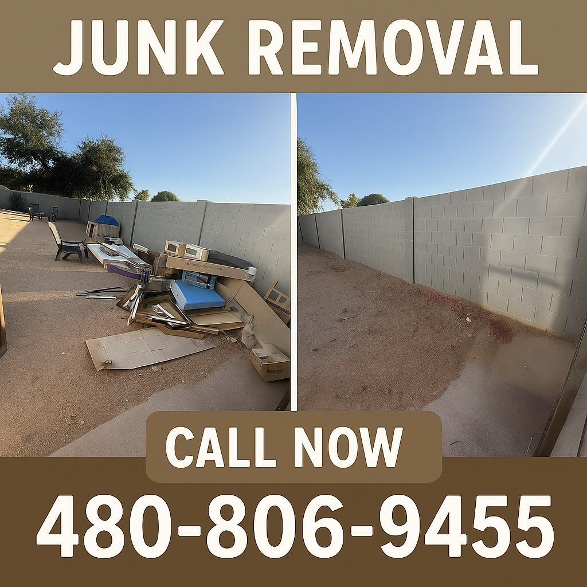

Crystal clear views start here.
Windows, screens, tracks, hard water, tint, solar panels and hauling across the East Valley.

water-fed pole
Every job is done by Jose Sandoval, the owner. Same hands on your glass every time, residential or commercial.
Glass
- Interior and exterior windows Streak free on homes and businesses, single storey up to multi storey, using purified water and a water-fed pole where the height calls for it.
- Screens and tracks Screens pulled, washed and re-set. Sills and sliding tracks vacuumed and scrubbed out.
- Hard water stain removal Mineral etching from sprinkler overspray and monsoon dust cut back off the glass.
Film and panels
- Window tinting UV and heat film to protect furnishings and hold the AC in, plus reflective film for privacy.
- Solar panel cleaning Dust and hard water film lifted off panels so the array stops losing output to grime.
Property
- Pressure washing Driveways, walkways, patios and building exteriors brought back to colour.
- Junk removal and hauling Monsoon debris, rental clear-outs and listing prep loaded up and taken away.

Straight from the van.
Filmed on their own jobs and posted to Instagram. Both clips play here with the sound off.
The same glass, one visit




“They left every window spotless, even cleaning the frames and screens to perfection.”
“Jose from East Valley Window Cleaning is a true professional. They are polite, easy to communicate with, and make you feel confident in their honesty and reliability.”
“Great job done! On time, on schedule. Windows and sliding doors look great.”
“Really great service!”
Tell us what needs cleaning.
480-806-9455Call or text with your address and roughly how many windows. Most homes can be priced without a visit.
- On the route
- Mesa, Gilbert, Chandler, Queen Creek, San Tan Valley, Apache Junction, Johnson Ranch and Bella Vista Farms.